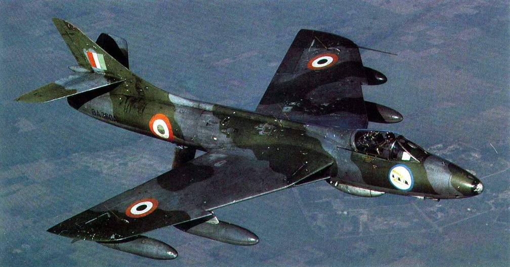

Technical Specifications
- Weight : Approximately 5 tons (empty weight).
- Engine : Powered by a Rolls-Royce Avon turbojet engine, producing around 10,000 pounds of thrust.
- Speed : Capable of speeds up to 1,150 km/h (715 mph).
- Armament :
Equipped with four 30mm ADEN cannons and could carry a variety of bombs, rockets, and air-to-air missiles, making
it highly effective for both air combat and ground-attack missions.
- Capacity: Single-seat configuration, though there was also a two-seat trainer variant.
- Notable Feature : The Hunter was known for its excellent handling, even at high speeds, and was well-regarded
for its combat maneuverability, particularly in dogfights.
- Range : Operational range of about 1,800 km, extendable with external fuel tanks.
- Crew : Single pilot.
Historical Significance
The Hawker Hunter was instrumental in establishing the IAF’s jet fighter capability. It became a cornerstone of India’s air
superiority and close support roles during its service. Its adaptability allowed it to perform various mission types effectively,
from intercepting enemy fighters to executing precision ground strikes. The Hunter's role in two wars cemented its legacy as one of the
IAF's most iconic aircraft.
Notable Missions
- 1965 Indo-Pak War: Hunters scored several air-to-air kills and carried out critical ground-attack missions,
including the destruction of Pakistani armor and supply lines. The Hunter's speed and agility made it effective against enemy aircraft in this conflict.
- 1971 Indo-Pak War: Hunters were essential in achieving air superiority and providing close air support to ground forces,
especially in the eastern theater of operations, where they played a significant role in supporting the Indian Army’s advance.
- Ground-Attack Success: The Hunter became especially well-regarded for its success in ground-attack roles, helping to
disrupt enemy supply and communication lines during both wars.
- Training and Transition: In its later years, the Hunter also served as a training platform for IAF pilots transitioning to supersonic
jets, providing crucial experience with transonic flight performance.